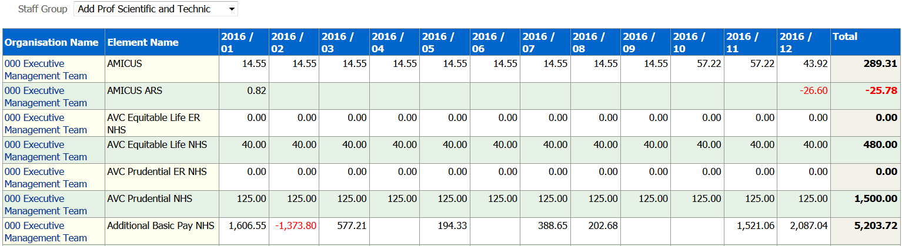
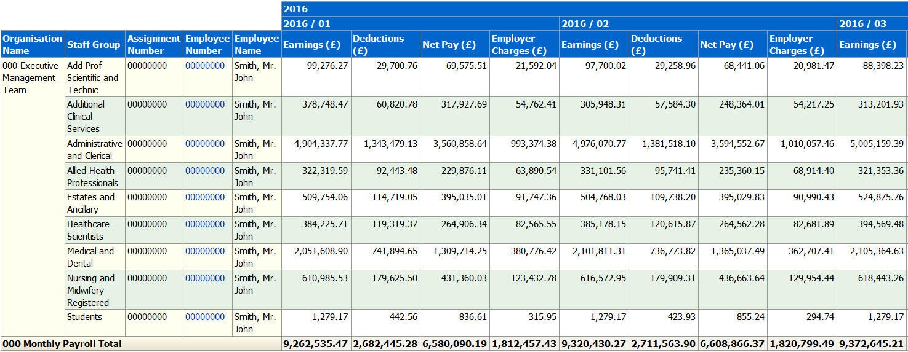

Recruitment Dashboard
Description
This dashboard is designed to provide the user with intelligence around Recruitment and the Mandatory Employment Checklist data held within ESR.
Allocation
This dashboard is available to the following URPs:
XXX BI Administration
XXX HR Administration
XXX HR Administration (With RA)
XXX HR Management
XXX Recruitment & Applicant Enrolment Administration
XXX Recruitment & Applicant Enrolment Administration (With RA)
Prompts
Organisation(s)
Staff Group(s)
Assignment Category
Hiring Manager
Vacancy Start Date Between
Vacancy Name
Location
Recruitment Monitoring
Description
The Recruitment Monitoring analysis provides users with summary and detailed recruitment monitoring information on enquiries, applicants, shortlisted applicants, offers sent out and the numbers of acceptance and declines. The grouping is defined by the assignment status and is shown below:
Enquiries: Application Pack Requested
Applicants: Application Pack Returned
Shortlisted: Shortlisted 1st Interview, Shortlisted 2nd Interview
Offered: Offered Post Conditional, Offered Post Unconditional
Appointed: Offer Accepted
Declined: Offer Declined
Users are able to click within the Summary Analysis to update the Detail Analysis directly below.
Data Items
| Title | Description |
|---|---|
| Applicant Count | Count of Applicants |
| Applicant Name | |
| Vacancy Name | |
| Vacancy Description | |
| Organisation | |
| Gender | |
| Marital Status | |
| Ethnic Group | |
| Religious Belief | |
| Sexual Orientation | |
| Disability | |
| Staff Group | |
| Org Level 1-4 | |
| Pay Scale | |
| Occupation Code | |
| DBS Disclosure Type |
View Selectors
Bar Graph (default); Table
Prompts
Gender
Marital Status
Ethnic Group
Staff Group
Org Level 1-4
Pay Scale
Occupation Code
DBS Disclosure Type
Example Screenshot

Applicants Tab
Description
This tab of the Recruitment Dashboard is designed to display a number of applicant-related overview analyses to support the user in analysing applicant totals and how applicants are progressing along the recruitment process.
Prompts
Organisation(s)
Staff Group(s)
Assignment Category
Hiring Manager
Employee Location
Vacancy Start Date Between
Vacancy Name
Applicant Type
Applicants
Description
This analysis is designed to show the number of Applicants by Staff Group for Open Vacancies. Users are able to open a separate analysis by clicking on the Applicant Count which will give details on the Applicants making up the total.
Data Items
| Staff Group | |
|---|---|
| Applicant Count | |
| Vacancy Start Date | |
| Vacancy Name |
View Selectors
Bar Graph (default); Table
Example Screenshot

Applicants at Assignment Status for greater than X Days
Description
This analysis is designed to show the number of Applicants that have been at a set Assignment Status for greater than a set number of days. Users should set the Assignment Status and the Number of Days criteria using the available prompts. Applicant Mass Update functionality is available in ESR to help update these records. For more information please see the ESR User Manual here.
Data Items
| Staff Group | |
|---|---|
| Applicant Count |
View Selectors
Bar Graph (default); Table
Example Screenshot

Days Taken to Assignment Status From Vacancy Creation
Description
This analysis shows the number of days taken for the assignment status of an applicant record to be set to a specific assignment status as defined by the user using the prompt available. A RAG Status is automatically set on the 'Days to Assignment Status' field, the parameters of this can be controlled using the available prompts. Only Open Applicant Records are included within this analysis.
Data Items
| Title | Description |
|---|---|
| Vacancy Name | |
| Applicant Title | |
| Applicant First Name | |
| Applicant Last Name | |
| National Insurance Number | |
| Hiring Manager Name | |
| Days To Assignment Status | Days Between Vacancy Start Date and Date at which the Assignment Status was set. |
View Selectors
None
Example Screenshot

Vacancies Tab
This tab shows the number of Open, Closed or All Vacancies grouped by Staff Group. Users are able to limit the date period using the Vacancy Start Date Prompt. Summary and Detail views are available, clicking within the summary view updates the detail view directly below.
Results can be limited to Open or Closed or All vacancies using the Return only Open / Closed Vacancies prompt.
Data Items
| Title | Description |
|---|---|
| Staff Group | |
| Vacancies | |
| Vacancy Name | |
| Vacancy Opened Date | |
| Vacancy Closed Date | |
| Days Open | Days between Vacancy Opened Date and Current Date |
| Vacancy Description | |
| Vacancy Position | |
| Vacancy Position Description |
View Selectors
Bar Graph (default); Table
Prompts
Vacancy Start Date
RAG Status (Days Open Column)
Return only Open / Closed Vacancies
Example Screenshot

Employment Checks Tab
This analysis shows the Mandatory Employment Checklist Status for Employees and Applicants as at an effective date. The criteria used for each check can be seen below:
Checklist Criteria
| Check | Data Item | Check Detail |
|---|---|---|
| ID Check | "EIT Verification of ID on Recr"."ID Checked Date"; "EIT Verification of ID on Hire"."ID Checked Date" | If either ID Checked Date has been completed then the report will return 'Checked' otherwise it will return 'Not Checked'. |
| Right to Work | "Human Resources - Person EIT Details"."EIT Illegal Working Checklist - List A"."Source Document Checked"; "Human Resources - Person EIT Details"."EIT Illegal Working Checklist - List B Group 1"."Source Document Checked"; "Human Resources - Person EIT Details"."EIT Illegal Working Checklist - List B Group 2"."Source Document Checked"; "Human Resources - Person EIT Details"."EIT Illegal Working Checklist - List B (First Combination)"."Reference Number" | An Employee fulfils the Right to Work criteria if: Work Permit Required = ‘Yes’ AND List B (First Combination) Reference Number IS NOT NULL and Is in Date OR Residency Status = ‘Temporary’ AND List B Group 1 Source Document Checked IS NOT NULL and Is in Date OR Residency Status = ‘Temporary’ AND LIST B Group 2 Source Document Checked IS NOT NULL and Is in Date OR List A Source Document Checked IS NOT NULL. 'Checked' is returned for employees fulfilling the criteria otherwise 'Not Checked' is returned. |
| Professional Registration/Qualifications | "Human Resources - Position EIT Details"."EIT NHS Reg and Membership Post Reqts"."Register and Membership Body"; "Human Resources - Position EIT Details"."EIT NHS Reg and Membership Post Reqts"."Registration Requirements"; "EIT Employment Checklist Detail"."Date of Qualifications Check" | Where the Registration and Membership Requirements against the Position are not set and the Date of Qualifications Check IS NOT populated then 'Prof Reg Requirements Not Set, Qualifications Not Checked' is returned. Where the Registration and Membership Requirements against the Position are not set and the Date of Qualifications Check IS populated then 'Prof Reg Requirements Not Set, Qualifications Checked' is returned. Where Registration and Membership Requirements are set then either 'Match' or 'NoMatch' is returned depending on whether the requirements have been met. |
| Ref and History Checks | "EIT Employment Checklist"."Employment History"; "EIT Employment Checklist"."References" | Where either the Employment History or the References field is NULL then 'Not Checked' is returned otherwise 'Checked' is returned. |
| DBS Details | "Position"."DBS Disclosure Type"; "Human Resources - Position EIT Details"."EIT NHS Registration and Membership Post Reqts"."DBS Requirements" | Where DBS Requirements are not set against the position but are recorded against the individual, 'DBS Details Recorded But No Requirements Set' is returned and the cell is highlighted amber. Where DBS Requirements are not set against the position and are not recorded against the individual then 'DBS Requirements set to None' is returned. Where DBS Requirements are set against the position and recorded against the individual then either 'Lower', 'Match' or 'Higher' is returned depending on how the requirements are set. |
| Medical Checks | "EIT Employment Checklist Detail"."Date of Medical Clearance" | Where the Date of Medical Clearance is NULL then 'Not Checked' is returned otherwise 'Checked' is returned. |
Data Items
| Title | Description |
|---|---|
| Employee / Applicant Number | |
| Title | |
| Last Name | |
| First Name | |
| Org Level 1-13 | |
| Staff Group | |
| Latest Start Date (Employees Only) | |
| Position | |
| ID Check | |
| Right to Work Check | |
| Professional Registration / Qualifications Checks | |
| DBS Details Checks | |
| Reference and History Checks | |
| Medical Checks | |
| Check Complete / Incomplete | If all checks are complete as per the criteria, ‘Checks Complete’ is returned otherwise ‘Checks Incomplete’ is returned. |
| Pre-employment Checks Complete | |
| Date Confirmed Personal Information | |
| Date Confirmed E&D Information |
Prompts
Effective Date
Employee Latest Start Date >= (Employees)
Projected Hire Date >= (Applicants)
Status (Applicants)
Example Screenshot

Activity Summary Tab
Description
This dashboard tab contains several KPIs and analyses designed to enable users to analyse the amount of time it takes for applicants to progress through the recruitment process.
Prompts
Vacancy
Recruiter
Staff Group
Location
Job Role
Organisation
Activity Date Between
Calculation Method (Default = Working Days)
Restrict to Hires Within X Months: this allows users to restrict analyses within the page to only return data based on Hires within a user specified period.
Calculations
Working Days = Number of Calendar Days divide by 7 and multiply by 5
Key Performance Indicators (KPIs)
Summary Description
A range of KPIs are provided with a description of each one available within the KPI itself or via the Dashboard Help link at the top of the dashboard. The RAG status thresholds set against each KPI can be changed by users using the prompts provided.
Detailed Description
| KPI | Description |
|---|---|
| Conditional Offer to Unconditional Offer | The average number of days between an applicant being set to a status of Offered Post Conditional and a status of Offered Post Unconditional. If applicants have not been set to either of these two status, they will not be included in the calculation. |
| Interview to Conditional Offer | The average number of days between an applicant being set to a status of First Interview and a status of Offered Post Conditional. If applicants have not been set to either of these two status, they will not be included in the calculation. |
| Shortlisting to Interview | The average number of days between an applicant being set to a status of Shortlisted 1st Interview and a status of First Interview. If applicants have not been set to either of these two status, they will not be included in the calculation. |
| Vacancy Opened to Unconditional Offer | The average number of days between the Vacancy Opened Date (this is the Requisition From Date on the Requisition and Vacancy Form) and an applicant being set to a status of Offered Post Unconditional. If applicants have not been set to either of these two status, they will not be included in the calculation. |
| Unconditional Offer to Hire Date | The average number of days between Unconditional Offer and Hire Date. If applicants have not been set to either of these two status, they will not be included in the calculation. Please note that this KPI does not use a RAG status prompt. |
Prompts:
Gauge 1 Amber From
Red From
Gauge 2 Amber From
Red From
Gauge 3 Amber From
Red From
Gauge 4 Amber From
Red From
Calculations
Average Days = Average number of days between previous status and current status.
Example Screenshot

DBS Activity
Description
This analysis is designed to show the average days difference and actual days difference between the date DBS/CoGS was requested and the date received, grouped by Org L1-13. Clicking on an Organisation Name within the summary table allows users to view assignments within that organisation in the table below.
Data Items
| Title | Description |
|---|---|
| Applicant Number | |
| Applicant Name | |
| Date DBS/COGS Requested | |
| Date DBS/COGS Received | |
| Days Difference | Number of days difference between the date DBS/CoGS was requested and the date received |
Example Screenshot

Reference Activity
Description
This analysis is designed to show the average days difference and actual days difference between the date a Reference was requested and the date received, grouped by Org L1-13. Clicking on an Organisation Name within the summary table allows users to view assignments within that organisation in the table below.
Data Items
| Title | Description |
|---|---|
| Applicant Number | |
| Applicant Name | |
| Date Requested | |
| Date Received | |
| Days Difference | Number of days difference between the date a Reference was requested and the date received |
Example Screenshot

Activity Tab
Description
This dashboard tab is designed to enable users to analyse the amount of time it takes for applicants to progress through the recruitment process. The analysis shows the number of days each applicant has taken to change status (for example a ‘10’ in the ‘Offer Accepted’ column would mean it took 10 days for the applicant to reach that status from their previous status). The summary analysis shows the average number of days, whereas the detail shows the exact number by applicant.
Prompts
Vacancy
Recruiter
Staff Group
Location
Job Role
Organisation
Activity Date Between
Calculation Method (Default = Working Days)
Restrict to Hires Within X Months: this allows users to restrict analyses within the page to only return data based on Hires within a user specified period.
Column Selectors
Job Role / Organisation Level 1- 13 / Recruiter
Columns
| Requisition Name |
|---|
| Requisition Start Date |
| Applicant |
| Applicant Name |
| Applicant Status |
Calculations
Days to Status = Number of days between previous status and current status. Where status = ‘Application Pack Requested’ then date between vacancy start date and applicant status start date.
Example Screenshot

Applicant Requirements
Description
A number of applicant requirements summary analyses available in Gauge, Graph and Table views based on the employee versions available within the NHS Staff Requirements Dashboard. The analyses are designed to provide intelligence on what employment checks need to be completed at applicant stage prior to hire.
Prompts
Organisation Name
Role
Staff Group
Applicant Number
Status
Position Name
Pay Scale
Vacancy Name
Effective Date
Gauge Prompts
Prof Reg Gauge Low Value DBS Gauge Low Value Right to Work Gauge Low Value |
Prof Reg Gauge High Value DBS Gauge High Value Right to Work Gauge High Value |
Gauges
| Title | Description |
|---|---|
| DBS Check % | (Number of applicants that require a DBS with a DBS check at the correct level recorded / Number of applicants with a DBS requirement) * 100 |
| Right to Work % | (Number of applicant records with a Right to Work check recorded / Total Number of Applicants) * 100 |
| Prof Reg % | (Number of applicants that require a prof reg with a current (as at report run date) prof reg recorded / Number of applicants with a prof reg requirement) * 100 |
Right to Work Criteria:
An Applicant fulfils the Right to Work criteria if:
Right to Work Required = ‘Yes’ AND List B (First Combination) Reference
Number IS NOT NULL and Is in Date
OR Residency Status = ‘Temporary’ AND List B Group 1 Source Document
Checked IS NOT NULL and Is in Date
OR Residency Status = ‘Temporary’ AND LIST B Group 2 Source Document
Checked IS NOT NULL and Is in Date
OR List A Source Document Checked IS NOT NULL.
Formatting
Red: 0-60
Yellow 61-80
Green: 81-100
Parameters are provided to enable users to vary the above values for each gauge.
Example Screenshots

Professional Registrations by Staff Group
Description
This analysis is designed to show the correct in-date professional registrations where they are required, grouped by various grouping items that includes Registration or Membership Body, Occupation Code, Pay Grade, Staff Group and Job Role.
Data Items
| Title | Description |
|---|---|
| Staff Group | Staff group associated with Job Role in position |
| Applicant Count | Total Number of Applicants |
| Prof Reg Checks | Number of applicants that require a Prof Reg who have obtained it |
| Prof Reg % | Number of applicants that require a Prof Reg who have obtained it / Number of applicants that require Prof Reg * 100 |
Filters
Include only records where a registration is required.
Example Screenshot

DBS Checks by Staff Group
Description
This analysis is designed to show which groups of applicants have had an appropriate DBS check where one is required.
Data Items
| Title | Description |
|---|---|
| Staff Group | Staff group associated with Job Role in position |
| Applicant Count | Total Number of Applicants |
| DBS Checks | Number of Applicants Requiring a DBS Check |
| DBS % | Number of applicants that require DBS check who have the correct DBS check level recorded (or higher) / Number of applicants that require DBS * 100 |
Filters
Include only records where DBS is required.
Example Screenshot

Right to Work by Staff Group
Description
This analysis is designed to show which groups of applicants have got an in-date right to work where one is required.
Data Items
| Title | Description |
|---|---|
| Staff Group | Staff group associated with Job Role in position |
| Applicant Count | Total Number of Applicants |
| Valid RTW | Number of Applicants with RTW check completed |
| RTW % | RTW Checks Completed / Total Number of Applicants * 100 |
Filters
None
Example Screenshot

Prof Reg Matching
Description
This tab is designed to provide the user with a list of applicants that require a professional registration and whether they have obtained that registration.
Prompts
Matching Result (Default ‘No Match’)
Data Items
| Applicant Number | Staff Group |
|---|---|
| Applicant Name | Organisation Name |
| Position Name | Registration Body |
| Matching | Professional Registration Number |
| Expiry Date |
Example Screenshot

DBS Checks
Description
This tab is designed to provide the user with a list of applicants that require a DBS check and the level at which they have been checked.
Data Items
| Applicant Number | Type of DBS Req. |
|---|---|
| Last Name | Type of DBS Disclosure |
| First Name | Date DBS/CoGS Received |
| Title | DBS Disclosure Issue Date |
| Email Address | DBS Website Check Date |
| Position Name | DBS Website Match |
| DBS Match |
Example Screenshot

Right to Work
Description
This tab is designed to provide the user with a list of applicants that do or do not have Right to Work Checks recorded in ESR.
Data Items
| Applicant Number | Source Document |
|---|---|
| Title | Source Document Checked |
| Last Name | Reference Number |
| First Name | Valid From |
| Organisation | Valid To |
| Staff Group |
Example Screenshot

Job Bulletin
Description
The Recruitment Job Bulletin analysis enables users to analyse all vacancies that are open in the selected period.
Prompts
*Date Between
*Vacancy
Staff Group
Data Items
| Staff Group | Vacancy Pay Grade |
|---|---|
| Requisition | Budgeted FTE |
| Requisition Description | Frequency |
| Vacancy Name | Activity Closing Date |
| Vacancy Description | External Contact Name |
| Job Role | Vacancy Status |
| Activity Name | Vacancy Position Number |
Example Screenshot

Applicants against Vacancy
Description
This analysis is designed to show applicants against vacancies that were open during the period selected.
Prompts
Vacancy Status
Applicant Name
Appilcant Status
Date Between
Data Items
| Vacancy Name | Applicant Number |
|---|---|
| Vacancy Description | Applicant Name |
| Organisation | Rejection Reason |
| Recruiter Name | Disabled |
| Closing Date |
Example Screenshot

Interview Schedule
Description
This analysis enables users to identify those applicants scheduled to attend an interview, their interview times and interviewees on specified dates for specified vacancies and staff group.
Prompts
Date Between
Vacancy Name
Vacancy Staff Group
Data Items
| Recruiter Name | Interview Location |
|---|---|
| Interview Date | Vacancy Role |
| Interview Type | Vacancy Staff Group |
| Interview Time | Vacancy Name |
| Interviewers | Applicant Name |
| Where to Report To | Applicant Number |
Example Screenshot

Applicant and Vacancy Listing
Description
This tab contains two analyses designed to show applications and vacancies that are open as at the effective date. These may be used to tidy up applications and vacancies going unused in ESR.
Prompts
Vacancy Opened Date Between
Applicant Number
Vacancy Name
Recruiting Organisation
Applicant Status
Vacancy Status
Effective Date
Open Applications
Description
This analysis is designed to show vacancies still open as at an effective date (default: Today) along with applicants.
Data Items
| Vacancy Name | Status End Date |
|---|---|
| Activity End Date | Termination Reason |
| Organisation | Date Application Received |
| Vacancy Role | Vacancy Opened Date |
| Recruiter Name | Vacancy Closed Date |
| Applicant Number | Application Last Updated Date |
| Applicant Name | Projected Hire Date |
| Applicant Status | Vacancy Status |
| Status Start Date | Person Type |
| Vacancy Staff Group | Vacancy Position Number |
| Requisition Name |
Example Screenshot

Vacancies without Applications
Description
This analysis is designed to show vacancies that are ‘vacant’ (i.e. have no applications against them) as at an effective date (default: Today).
Data Items
| Vacancy Name | Recruiter Name |
|---|---|
| Activity End Date | Vacancy Opened Date |
| Organisation | Vacancy Closed Date |
| Vacancy Role | Vacancy Status |
| Requisition Name | Vacancy Description |
| Requisition Description | Vacancy Staff Group |
Example Screenshot